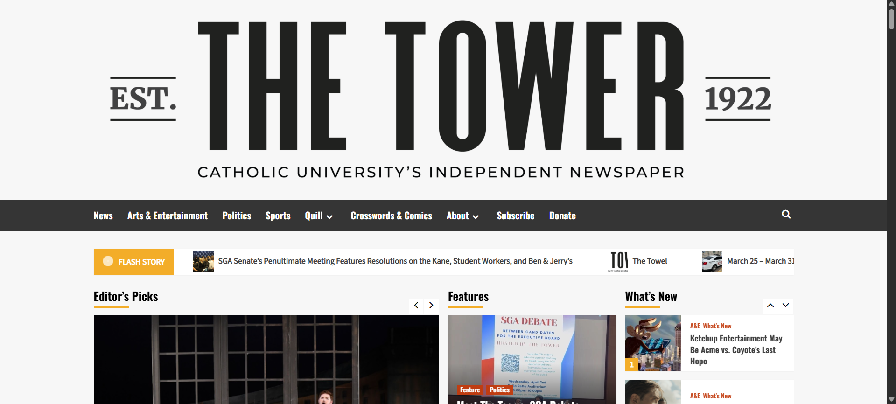

Annaliese Haman
LSC 555
Assignment #2 - System Analysis and Usability Test
This assignment focused on analyzing The Tower's website through a Heuristic Analysis and a usability test.
What follows is a table of inputs and outputs that occur on The Tower’s website
| Input | Output |
|---|---|
| Clicking article picture/link on the homepage | Brings the user to that article in the same tab |
| Clicking section in the top bar | Takes user to a page for all the articles of that section of the paper in same tab |
| clicking The Tower logo at the bottom of the page | Opens file of the image in same tab |
| Click the yellow arrow button that appears after scrolling past the top bar | Auto scrolls the user to the top of the page |
What follows is an analysis of The Tower's website following the Nielsen's 10 principles.
The strongest part of The Tower’s webpage is their design. It is clean and easy to follow, and allows the user to clearly see what is presented on the webpage. Their clean design is consistent throughout the site, and it allows their articles to be easily accessible. It follows Nielsen’s Heuristics very closely in this regard, though there is a glaring problem with their design. This problem is mentioned just below.
The worst part of The Tower is also related to the strongest. The layout of the website has a massive flaw, and that is the list of archives going back to September 2015. There is a sidebar that lists all the archives by month. This exact list is duplicated at the bottom of the website. There is no way to collapse these lists, or remove them from view. This causes an extraneous amount of scrolling for any user to reach the bottom of the page or to reach archives that date back further than the past two years.
The second best part of the website is the simplicity of the website. There are no guidelines presented for ways to navigate the website as it is very simple. While it could potentially behoove The Tower to include a guide of some kind, the webpage is so simple that it is unneeded. Adding one would simply add to the mass of information already on The Tower’s website.
The second worst part of the website is the lack of maneuverability. There are no filters accessible to use for narrowing search results, nor is there a way to reorder search results. The lack of a filtering system is a true setback when trying to find certain topics. Additionally, besides the ‘back’ button on the user’s web browser, there is no easy way to move around the webpage. While the headers at the tops of articles are helpful, the lack of customization can become frustrating.
There were mostly similarities between the Heuristic Analysis and the mini-usability test; the test primarily highlighted more specifics about the negative or positive aspects of the website. It was easy for the volunteer to navigate around the site, as he pointed out himself. The UI was attractive enough for it to garner a specific comment about how attractive it was. The volunteer noted how the information was consistent all around, there were no difficulties in comprehending what The Tower was trying to do in its design and execution. I noted the same in my analysis, that The Tower is consistent with itself and other websites. The lack of elaboration on the archives and their older issues beyond 2015 is something that I overlooked in detail in my analysis, but it was noted during the test since the lack of those editions or ways to access them was crucial for the volunteer’s task. An easy way to resolve this issue would be to first move the archives to a separate page, then to include a link that takes the user to the older editions of The Tower. In summation, my observation and analysis through the Heuristics recognizes many issues that became apparent during the volunteer’s session.